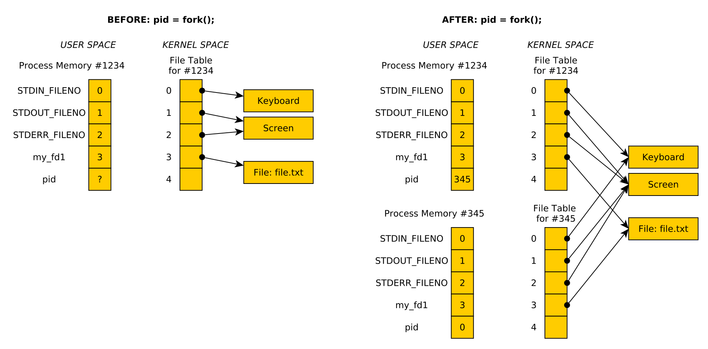
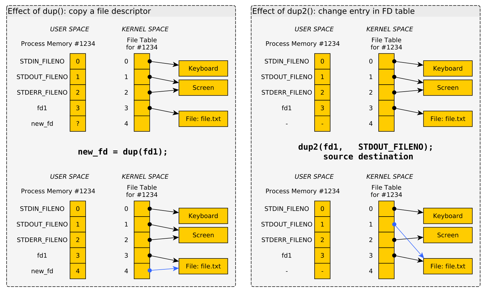

CMSC216 Lab09: Make/Makefiles and I/O Redirection
- Due: 11:59pm Sun 19-Apr-2026 on Gradescope
- Approximately 1.00% of total grade
CODE DISTRIBUTION: lab09-code.zip
- Download the code distribution
- See further setup instructions below
CHANGELOG: Empty
- Mon Apr 13 10:49:18 AM EDT 2026
Post 206 reported a minor bug in the
Makefilefor Lab09 and an inconsistent comment. The incorrect comments in the template forchildout_query.ccan be effectively ignored but the lab codepack has been updated to provide better guidance. An updatedMakefilecan be downloaded using the commands below:>> cd lab09-code >> mv Makefile Makefile.old >> wget https://www.cs.umd.edu/~profk/216/Makefile
1 Rationale
Build systems are essential to program development to automate
repetitive tasks such as compiling code, running tests, and tracking
changes which would necessitate running such tasks. The make build
system is among the oldest build system and is ubiquitous across Unix
systems making it a useful to know a few basics about it.
Unix maintains a table of open File Descriptors for each running
process. Using the dup() and dup2() system calls, programs can
manipulate this table to achieve interesting effects, notably
redirection of output from standard locations to other places. This
exercise demonstrates some common techniques for doing so and will
acquaint students with the basics of how the file descriptor table
works and how it is inherited by child processes.
Associated Reading
Students only need to master the basics of make and its Makefile
format which are discussed in this document. Those wanting a more
complete account should consult the GNU Make Manual as it is the most
widely deployed implementation of make and its manual is thorough.
Bryant and O'Hallaron CS:APP covers I/O redirection in Section 10.9
which gives good treatment of the dup2(). The preceding Section 10.8
also discusses manipulations of the file descriptor table between
parent and child processes.
Grading Policy
Credit for this lab is earned by completing the code/answers in the
Lab codepack and submitting a Zip of the work to Gradescope preferably
via running make submit. Students are responsible to check that the
results produced locally are reflected on Gradescope after submitting
their completed Zip.
Lab Exercises are Free Collaboration and students are encouraged to cooperate on labs. Students may submit work as groups of up to 5 to Gradescope: one person submits then adds the names of their group members to the submission.
No late submissions are accepted for Lab work but the lowest two lab scores for the semester will be dropped including zeros due to missing submissions. See the full policies in the course syllabus.
2 Codepack
The codepack for this exercise is linked at the top of this document. Always download it and unzip/unpack it. It should contain the following files which are briefly described.
| File | Use | Description |
|---|---|---|
makeproblem-demo-little |
Study | Problem 1 Example Makefiles to study |
makeproblem-demo-big |
Study | Problem 1 Example Makefiles to study |
makeproblem-create/Makefile |
EDIT | Problem 1 Template Makefile to complete for problem |
test_makefile.org |
Testing | Problem 1 CODE tests, used in make test-prob2 |
switch_stdout.c |
Study | Problem 2: C file to study to answer QUIZ questions |
childout_query.c |
EDIT | Problem 2 code outline to complete |
nums.txt |
Data | Problem 2: Data used in the tests |
QUESTIONS.txt |
EDIT | Questions to answer: fill in the multiple choice selections in this file. |
QUESTIONS.txt.bk |
Backup | Backup copy of the original file to help revert if needed |
Makefile |
Build | Enables make test and make zip |
testy |
Testing | Test running scripts |
test_lab09.org |
Testing | Tests for this exercise |
gradescope-submit |
Provided | Allows submission from the command line |
3 Problem 1: Background on Makefiles
Building programs often involves compiling separate source files and
eventually combining them through linking to create an executable.
There are often associated tasks such as running automated tests,
creating distribution files, and generating documentation that may be
supported by the build system as well. Among the oldest build systems
still in use is make and its associated Makefiles. This problem
covers the basics of how to create a Makefile.
3.1 Structure of Makefiles
The basic structure of a Makefile involves rules which relate
targets, dependencies, and commands. Simple Makefiles comprise a
list of rules.
# comment above Rule 1 target1 : dependency1A depency1B command1A command1B command1C # comment above Rule 2 target2 : dependency2A command2A command2B # comment above Rule 3 target3 : dependency3A dependency3B dependency3B command3A command3B
When invoked, make target3 will load the contents of the Makefile
and examine the relationship between target3 and its
dependencies. If make determines it is necessary, it may run
command3A, command3B in sequence to "update" target3. In other
cases, make may determine that there is no need to run additional
commands as target3 is already up to date. Similarly, running make
target1 will possibly run command1A, command1B, command1C.
NOTE: Commands associated with a rule MUST BE INDENTED WITH A TAB. This is a notoriously bad "feature" of make which can occasionally cause problems. Be aware: leading whitespace for commands should be TAB characters.
The most common kind of target is a file that should be created such
as a .o file or an executable program. The directory
makeproblem-demo-little has an example Makefile showing this:
1: # Simple Makefile to build program main_prog 2: 3: # first rule in the file is the default: typing `make` is the same as 4: # typing `make main_prog` 5: 6: # rule 1 7: main_prog : main_func.o func_01.o 8: gcc -o main_prog main_func.o func_01.o 9: 10: # rule 2 11: main_func.o : main_func.c 12: gcc -c main_func.c 13: 14: # rule 3 15: func_01.o : func_01.c 16: gcc -c func_01.c 17: 18: # rule 4 19: clean : 20: rm -f *.o 21: rm -f main_prog
The rules that appear are
main_progdepends on themain_func.oandfunc_01.o; the program is created by invoking GCC on these filesmain_func.odepends onmain_func.cwhich is created by running GCCfunc_01.odepends onfunc_01.cand is created by running GCCcleanis a "phony" target with no dependencies which will remove compile artifacts by using thermcommand
When one types make or make main_prog in that directory, the
following will appear:
>> cd makeproblem-demo-little/ >> make gcc -c main_func.c gcc -c func_01.c gcc -o main_prog main_func.o func_01.o
Observe that make detects that the two dependencies for Rule 1 are
incomplete: main_func.o and func_01.o are not present. To create
them, it will generate them as targets according to for the rules that
have them as targets, Rule 2 and Rule 3. After running the commands
for these two rules, the commands for Rule 1 are executed to generate
the program.
3.2 Variables and Shortcuts in Makefiles
Makefiles support a large number of features such as explicit
variables, automatic variables, pattern-based rules, and many
others. A few of these are described in the sample file
makeproblem-demo-little/Makefile-shortcuts. It accomplishes the same
task as the Makefile but utilizes some features which are useful to
know about. The comments in this file describe some of these features.
1: # Simple Makefile to build program main_prog 2: 3: # first rule in the file is the default: typing `make` is the same as 4: # typing `make main_prog` 5: 6: # rule 1 7: main_prog : main_func.o func_01.o 8: gcc -o main_prog main_func.o func_01.o 9: 10: # rule 2 11: main_func.o : main_func.c 12: gcc -c main_func.c 13: 14: # rule 3 15: func_01.o : func_01.c 16: gcc -c func_01.c 17: 18: # rule 4 19: clean : 20: rm -f *.o 21: rm -f main_prog
By default, typing make will search for a file named Makefile but
the following invocation allows using a specific file other than that:
>> make -f Makefile-shortcuts
3.3 Dependency Detection
Makefiles are useful for larger projects to automatically detect
dependencies which must be updated. The example in
makeproblem-demo-big/ shows a "larger" project with more files. Observe
the following:
>> make # COMPILE 1 gcc -c main_func.c gcc -c func_01.c gcc -c func_02.c gcc -c func_03.c gcc -c func_04.c gcc -c func_05.c gcc -c func_06.c gcc -c func_07.c gcc -c func_08.c gcc -c func_09.c gcc -c func_10.c gcc -c func_11.c gcc -c func_12.c gcc -c func_13.c gcc -c func_14.c gcc -c func_15.c gcc -c func_16.c gcc -c func_17.c gcc -c func_18.c gcc -c func_19.c gcc -c func_20.c gcc -o main_prog main_func.o func_01.o func_02.o func_03.o func_04.o func_05.o func_06.o func_07.o func_08.o func_09.o func_10.o func_11.o func_12.o func_13.o func_14.o func_15.o func_16.o func_17.o func_18.o func_19.o func_20.o >> make # COMPILE 2 make: Nothing to be done for 'all'. >> rm func_12.o # delete a .o >> touch func_05.c # make func_05.c look like it has been edited >> make # COMPILE 3 gcc -c func_05.c # only out of sync or gcc -c func_12.c # missing targets are regenerated gcc -o main_prog main_func.o func_01.o func_02.o func_03.o func_04.o func_05.o func_06.o func_07.o func_08.o func_09.o func_10.o func_11.o func_12.o func_13.o func_14.o func_15.o func_16.o func_17.o func_18.o func_19.o func_20.o
The lesson above is in COMPILE 3: make detects that most of the .o
files are in sync with their source files. Only the missing / out of
sync targets have their rules applied to regenerated them and update
the exectuable program.
4 Problem 2: I/O Redirection
Programs often need to deal with open files for reading and
writing. The UNIX Operating System (Linux included in this) maintains
a data structure called the File Descriptor Table for all open
files. Some entries in this table are automatically created like
Standard Input and Standard Output. Others are created via the
open() system call. The table is maintained in Kernel Space and can
only be altered via system calls like open() / close() / ~dup() /
dup2().
It is useful to have some diagrams of how the dup() and dup2()
system calls manipulate the table of file descriptors. The following
diagrams will be discussed in lecture and may be used by course staff
to assist students in understanding how programs like
switch_stdout.c work.
Fork and Child File Descriptors

Figure 1: Effects of open()'ing a file then calling fork() : the child and parent both refer to the same open file.
dup() and dup2() System calls

Figure 2: LEFT: Effect of calling dup() to create a duplicate file descriptor table entry. RIGHT: Effect of calling dup2() to overwrite on file descriptor entry with another.
5 QUESTIONS.txt File Contents
Below are the contents of the QUESTIONS.txt file for the exercise.
Follow the instructions in it to complete the QUIZ and CODE questions
for the exercise.
_________________
LAB09 QUESTIONS
_________________
Exercise Instructions
=====================
Follow the instructions below to experiment with topics related to
this exercise.
- For sections marked QUIZ, fill in an (X) for the appropriate
response in this file. Use the command `make test-quiz' to see if
all of your answers are correct.
- For sections marked CODE, complete the code indicated. Use the
command `make test-code' to check if your code is complete.
- DO NOT CHANGE any parts of this file except the QUIZ sections as it
may interfere with the tests otherwise.
- If your `QUESTIONS.txt' file seems corrupted, restore it by copying
over the `QUESTIONS.txt.bk' backup file.
- When you complete the exercises, check your answers with `make test'
and if all is well. Create a zip file and submit it to Gradescope
with `make submit'. Ensure that the Autograder there reflects your
local results.
- IF YOU WORK IN A GROUP only one member needs to submit and then add
the names of their group on Gradescope.
PROBLEM 1 QUIZ: Questions on Makefiles
======================================
Review the presentation of `Makefile' basics in the lab description
and analyze the examples provided in the demo directories
`makeproblem-demo-little' and `makeproblem-demo-big'. Then answer the
following questions.
Command Execution
~~~~~~~~~~~~~~~~~
Which of the following best describes when the commands for a rule are
run?
- ( ) The commands for all targets in the Makefile are all run every
time make is used
- ( ) Only the commands associated with the target named on the
command line are run; e.g. `make targ5` will run commands associated
with targ5
- ( ) Commands for a given rule execute only if make detects a its
target is needed and then only if the target is missing or older
than its dependencies
Rule Syntax
~~~~~~~~~~~
Which of the following Rules correctly lays out the syntax for target,
dependencies, and commands in a Makefile.
,----
| # RULE A
| target : dependency1 dependency2
| command1
| command2
| command3
|
| # RULE B
| target : dependency1 dependency2
| command1
| command2
| command3
|
| # RULE C
| dependency1 dependency2 : target
| command1
| command2
| command3
|
| # RULE D
| target :
| command1
| command2
| command3
| : dependency1 dependency2
`----
- ( ) RULE A
- ( ) RULE B
- ( ) RULE C
- ( ) RULE D
Variance in Makefiles
~~~~~~~~~~~~~~~~~~~~~
Check ALL that are true about Makefile features
- ( ) Rules may have 0 dependencies
- ( ) Rules may have 0 commands
- ( ) Rules have no more than 1 command
- ( ) Rules have no more than 1 dependency
- ( ) Makefiles can set up explicit variables for use in rules
- ( ) Makefiles provide a variety of automatic variables for use in
rules
- ( ) A Makefile can have deeply nested decencies: targA depends on
targB depends on targC depends on targD etc.
Problem 2 CODE: makeproblem-create
==================================
Complete the template in the subdirectory
`makeproblem-create/Makefile' according to the comments there. The
essential idea is to build the linked list program from an earlier lab
and add a few other targets. Once you add rules for certain targets,
you can test them interactively via commands like `make' and `make
clean' in that directory. You can also run the automated tests of this
via a problem test:
,----
| >> cd lab09-code
| >> make test-prob1 # run tests for Makefile under makeproblem-create
| ...
`----
PROBLEM 2 QUIZ: Questions on switch_stdout.c
============================================
Analyze the `switch_stdout.c' program. Compile and run it via
,----
| > make switch_stdout
| ...
| > ./switch_stdout
| ...
`----
Analyze the code and focus your attention on the use of `open() /
dup() / dup2()' which this program demonstrates.
Answer the following Questions about the techniques used in this
program. You may need to consult the Manual Page / Documentation on
some functions to answer confidently.
Program Output
~~~~~~~~~~~~~~
Which of the following is the output for `switch_stdout' when run?
(each of 1. 2. 3. appear on separate lines in the output)
- ( ) 1. Now you see me. 2. Now you don't! 3. How mysterious...
- ( ) 1. Now you see me. 2. Now you don't!
- ( ) 1. Now you see me. 3. How mysterious...
- ( ) 1. Now you see me.
open() system call
~~~~~~~~~~~~~~~~~~
The `open()' system call is used to open a file for writing in the
example. What is returned by this system call?
- ( ) A `FILE *' which is passed to subsequent I/O operations or
`NULL' for failure
- ( ) An integer file descriptor which is >= 0 for success and -1 for
failure
- ( ) An integer return code that is 1 for success and 0 for failure
- ( ) A `char *' which is the name of the opened file or `NULL' for
failure
Use of dup()
~~~~~~~~~~~~
Which of the following best describes how the `dup()' system call is
used in `switch_stdout.c'?
- ( ) It creates a duplicate of a file descriptor allowing standard
output to be restored to the screen late in the program.
- ( ) It manipulates the file descriptor table so output that would go
to the screen goes into a file instead.
- ( ) It duplicates an existing file creating an efficient copy of it
on disk.
- ( ) It creates a child process that prints to a file instead of the
screen.
Use of dup2()
~~~~~~~~~~~~~
Which of the following best describes how the `dup2()' system call is
used in `switch_stdout.c' when it is first called?
- ( ) It creates a duplicate of a file descriptor allowing standard
output to be restored to the screen late in the program.
- ( ) It manipulates the file descriptor table so output that would go
to the screen goes into a file instead.
- ( ) It duplicates an existing file creating an efficient copy of it
on disk.
- ( ) It creates a child process that prints to a file instead of the
screen.
printf() changes in behavior
~~~~~~~~~~~~~~~~~~~~~~~~~~~~
Good old `printf()' is used in `switch_stdout.c' in several places but
seems to change its behavior in some of these spots. Which of the
following best describes this variation in behavior?
- ( ) `printf()' is called with different arguments that cause it to
print to different destinations, sometimes standard output,
sometimes a file
- ( ) `printf()' is called the same way in each case but automatically
begins printing to a file that is `open()''d and when it is
`close()''d, `printf()' reverts to printing to the screen
- ( ) `printf()' is called the same in each case and always prints to
standard output but by changing what is in the file descriptor table
at that position, output goes to the screen or to a file.
PROBLEM 2 CODE: childout_query.c Program
========================================
Fill in the template code provided in `childout_query.c'. The intent
of the program is to build off of the previous system calls like
`fork() / exec() / stat()' and combine then with the newly introduced
`dup2()' faclity to accomplish the following:
1. Specify an output file, a query character, and a command to run on
the command line
2. Fork and Exec a child process to run the given command and redirect
output into the named file
3. Have the parent wait until the child is finished
4. The parent then reports how many bytes of output are in the child's
output file
5. The parent opens the child output file, scans and prints it all
out, and reports how many times the query_letter appears in the
output
Below is a demonstration of how the program is meant to work.
,----
| >> childout_query
| usage: childout_query <childfile> <query_letter> <child_arg0> [child_arg1] ...
|
| >> childout_query test.txt 3 seq 31 35
| Child redirecting output to 'test.txt', then exec()ing
| Parent waited, Child complete, exit code 0
| child produced 15 bytes of output
| Scanning child output for '3'
| 31
| 32
| 33
| 34
| 35
| child output contained 6 occurrences of '3'
`----
Note that the 15 bytes of output is due to there being 5 lines with 3
characters each: all lines comprise two digits and a newline (\n).
Here is another example where an `ls' command is run as the child
process.
,----
| >> childout_query x.txt u ls /
| Parent waiting for child to complete
| Child redirecting output to 'x.txt', then exec()ing
| Parent waited, Child complete, exit code 0
| child produced 99 bytes of output
| Scanning child output for 'u'
| bin
| boot
| dev
| etc
| home
| lib
| lib64
| lost+found
| mnt
| opt
| proc
| root
| run
| sbin
| srv
| swapfile
| sys
| tmp
| usr
| var
| child output contained 3 occurrences of 'u'
`----
6 Submission
Follow the instructions at the end of Lab01 if you need a refresher on how to upload your completed exercise zip to Gradescope.